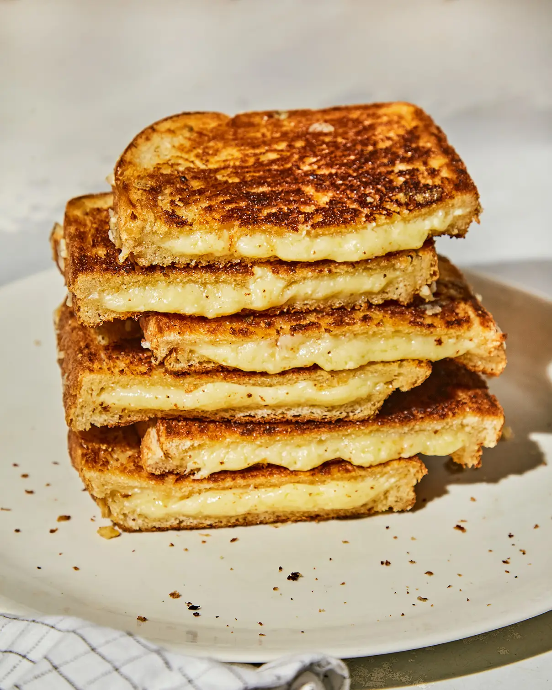

Munchies Recipes

The Ultimate Grilled Cheese Sandwich
In simple recipes like this 3-ingredient family favorite,
quality ingredients are the key to success.
Serves 2
Total Time : 30 Minutes
Ingredients
- 4 Tbsp. unsalted butter, softened
- Four ½-in. thick slices sourdough bread
- 2⅓ cup (8 oz.) coarsely grated Comté cheese
The secret to making a perfect grilled cheese sandwich is cooking
it over low heat, which brings out the subtle flavors of a cheese.
Nutty and complex Comté, made in the Jura region of the French Alps,
is great for grilling; if you can’t find it, Gruyère is a suitable
substitute. Slathering the bread liberally with butter helps the
bread crisp evenly in the pan.
This recipe first ran alongside Cara De Silva’s 2009 article,
“The Real Thing.”
Instructions
- Spread the butter evenly on both sides of each slice of
bread. Put half of the cheese on one slice and half on
another. Top each with remaining bread slices.
-
Heat a large cast-iron skillet or griddle over medium-low
heat. Add the sandwiches and cook, flipping once, until
golden brown and crusty on both sides, 18–20 minutes.
Transfer the sandwiches to a cutting board, cool slightly,
then slice them in half and serve warm.
Return To Top

French Bread Pizza
Grab a loaf of French bread, and get ready for the pizza hack of
a lifetime. Instead of dealing with dough, use a loaf
to create the delicious base to your pizza. Not only
will it get perfectly crisp in the oven, but it's so
easy to create—simply toast your bread, add your desired
topping, bake and voila! Pizza night has never been easier.
Serves 4
Prep Time : 15 Minutes
Total Time : 45 Minutes
Ingredients
- 1 loaf French bread
- 4 Tbsp. butter, melted
- 2 cloves garlic, minced
- 1 c. marinara or pizza sauce
- 1 1/2 c. shredded mozzarella
- Pepperoni slices
- 2 Tbsp. freshly grated Parmesan
- Crushed red pepper flakes
- Freshly chopped basil, for topping
What is French bread pizza?
Instead of dealing with pizza dough, we use a loaf of French bread to create
our pizza! The "crust" that forms will be crispy on the outside, while staying
nice and soft on the inside. While it's delicious as is, we decided to take
things a step further. We brushed our French loaf with garlic butter here to
create a garlic bread-esque crust, adding one of our other favorite Italian
restaurant staples into the mix.
You could skip the garlic if you’re a purist (but hey, we’re
making pizza on bread here, so we say anything goes!), but we still
recommend toasting the bread for a few minutes before you put your
toppings on to keep it nice and crisp.
Instructions
-
Preheat oven to 400°. Slice bread in half lengthwise. Mix
melted butter and garlic together and brush all over cut
side of bread. Bake for 10 minutes to lightly toast.
-
Spread marinara on top and top with mozzarella, pepperoni
slices, parmesan, and red pepper flakes. Bake again until
cheese is melty, 10 minutes more.
- Top with basil to serve.
Return To Top

Pizza Casserole
From the realms of cheesy pizza and bubbling baked pasta comes
a new family favorite: pizza casserole. Loaded with sausage,
veggies, and plenty of cheese, this easy weeknight dinner has
all of the cheesy, tomato-filled goodness of our favorite
take-out pizza, neatly packaged in a 13"-by-9" pan.
Serves 6-8
Prep Time : 20 Minutes
Total Time : 1 Hour 20 Minutes
Cal/Serv : 786
Ingredients
-
4 Tbsp. extra-virgin olive oil, divided, plus more for pan
- 12 oz. cavatappi pasta
- 2 Tbsp. plus 2 tsp. kosher salt, divided
- 1 lb. Italian sausage, casings removed
- 8 oz. cremini mushrooms, stemmed and sliced
- 1 small yellow onion, chopped (about 1 1/2 c.)
- 2 cloves garlic, finely chopped
- 3 (8-oz.) cans tomato sauce
- 1 (14.5-oz.) can diced tomatoes
- 1 1/2 tsp. dried oregano
- 1 tsp. dried basil
- 1/4 tsp. crushed red pepper flakes
-
1/2 green bell pepper, seeds and stem removed, chopped
into 1/2" pieces
- 3 c. shredded mozzarella, divided
- 1/3 c. sliced pepperoni (about 2 oz.)
Instructions
-
Preheat oven to 350°. Grease a 13"-by-9" glass baking dish
with oil.
-
Bring a large pot of water to a boil over high heat.
Add pasta and 2 tablespoons salt and cook, stirring
occasionally, until al dente, 7 to 9 minutes (pasta
should still be slightly undercooked in the center).
Drain pasta; set aside.
-
Meanwhile, in a large skillet over medium heat, heat 1
tablespoon oil. Add sausage and cook, breaking into
bite-size pieces, until browned and cooked through,
4 to 5 minutes. Transfer sausage to a medium bowl,
leaving as much fat in skillet as possible.
-
In same skillet over medium heat, combine mushrooms and
1 tablespoon oil; season with 1/2 teaspoon salt. Cook,
tossing occasionally, until browned, 5 to 6 minutes.
Transfer mushrooms to bowl with sausage.
-
In same skillet over medium heat, cook onion, garlic,
1/2 teaspoon salt, and remaining 2 tablespoons oil,
stirring occasionally, until onion is softened, 4 to 5
minutes. Stir in tomato sauce, diced tomatoes, oregano,
basil, red pepper flakes, and remaining 1 teaspoon salt.
Remove 2 cups sauce and reserve. Fold bell peppers and
cooked sausage, mushrooms, and reserved pasta into
remaining sauce. Cook, stirring, until heated through,
1 to 2 minutes more.
-
Pour half of pasta mixture into prepared casserole dish.
Sprinkle with 1 cup mozzarella. Top with remaining pasta
mixture. Pour reserved 2 cups sauce over.
-
Cover pan with foil and bake until hot and bubbling around
the edges, about 20 minutes. Remove foil, top with
remaining 2 cups mozzarella, then pepperoni, and continue
to bake until cheese is melted and pepperoni is browned,
15 to 20 minutes more. Once done, top with Parmesan
(if you so desire), and get to serving.
Return To Top